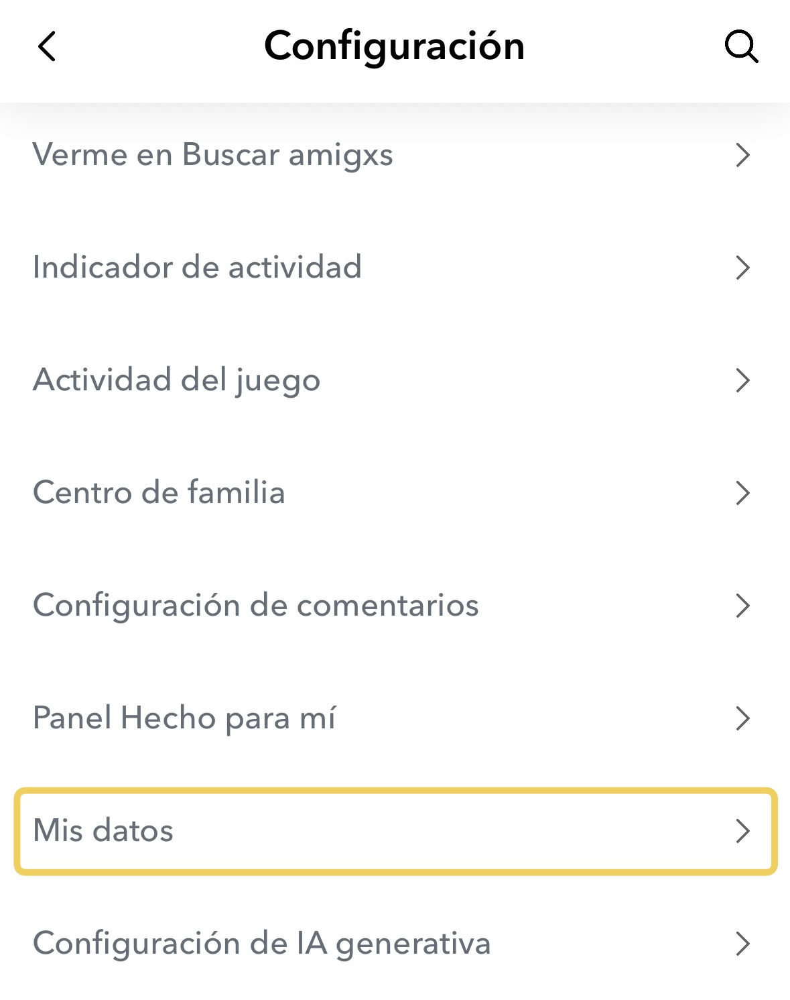
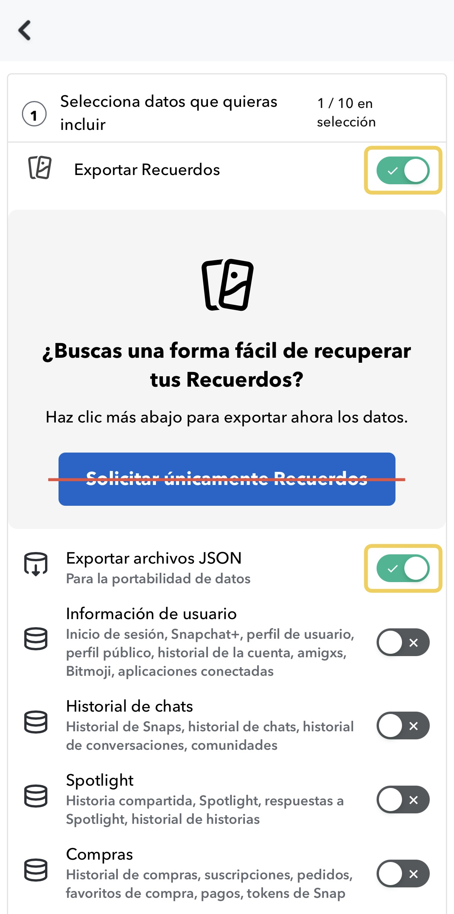
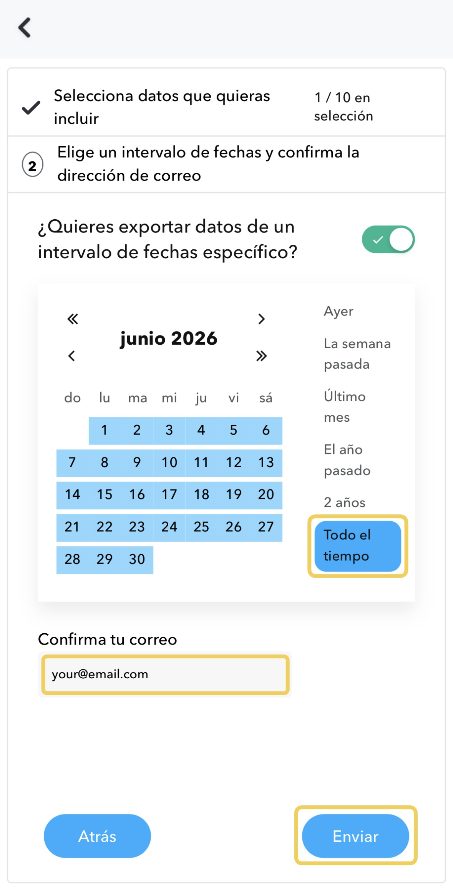
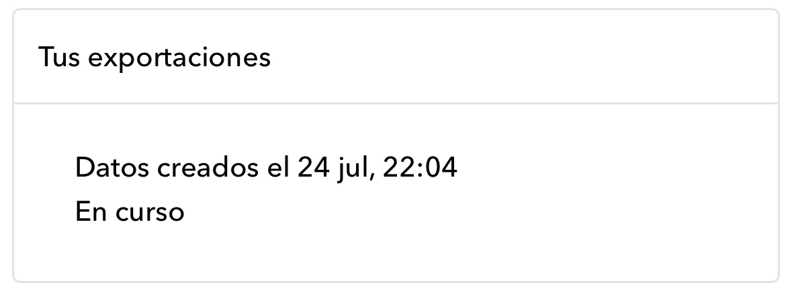
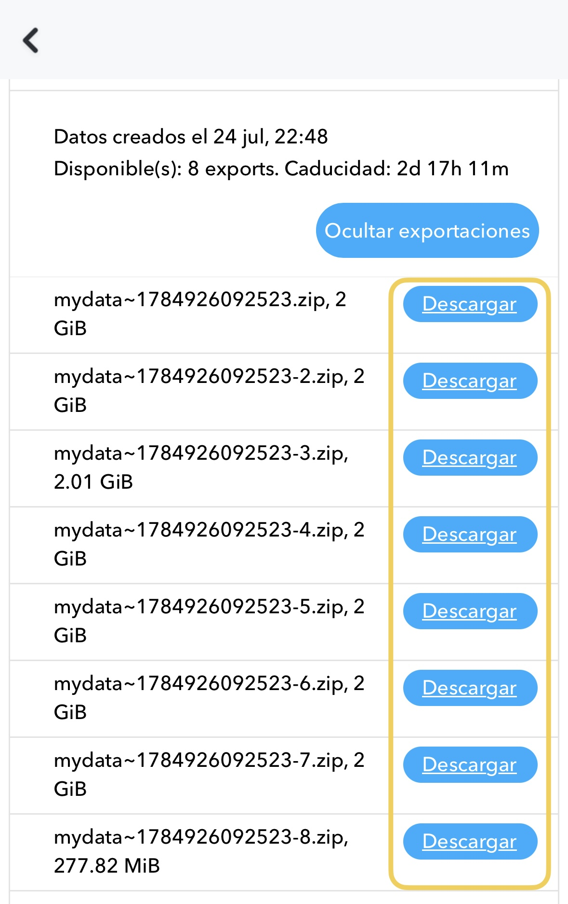

La guía de exportación completa
Cómo guardar tus Recuerdos de Snapchat en tu carrete
Todo el camino, paso a paso: cómo exportar tus Recuerdos de Snapchat y traerlos a casa. Funciona instales o no nuestra app.
Los Recuerdos de Snapchat viven en Snapchat, y solo en Snapchat. No hay ningún botón de «seleccionar todo, guardar en el carrete», y guardar los snaps de uno en uno deja de ser una opción hacia el recuerdo número cuarenta. El camino de verdad es la exportación de datos oficial de Snapchat. Te lo da todo de golpe, pero tiene dos trampas: un interruptor que decide en silencio si tus fotos conservan sus fechas, y una carpeta que llega en pedazos revueltos. Los seis pasos de abajo recorren todo, trampas incluidas.
Paso a paso
Exporta tus Recuerdos, de principio a fin
Abre Mis datos en Snapchat
Toca tu perfil, abre Configuración (la rueda dentada, arriba a la derecha) y baja hasta Mis datos. También funciona en un navegador en accounts.snapchat.com.

Activa Recuerdos y archivos JSON
Activa tanto Exportar Recuerdos como Exportar archivos JSON. Los archivos JSON llevan la fecha y el lugar de cada recuerdo.
Evita el botón grande Solicitar únicamente Recuerdos: ese atajo deja fuera los archivos JSON, y la importación los necesita.

Elige un periodo, confirma el correo, envía
Elige cuánto exportar (Todo el tiempo lo trae todo), comprueba que la dirección de correo es la tuya, y toca Enviar.

Deja que Snapchat la prepare
Tu solicitud aparece como En curso. Snapchat te envía un correo cuando está lista, normalmente en unas horas, aunque una biblioteca muy grande puede tardar un día.
¿No hay correo? Revisa tu carpeta de spam, y luego mira directamente en Mis datos → Tus exportaciones.

Descarga cada .zip
De vuelta en Mis datos, abre Tus exportaciones y descarga cada mydata~….zip en tu iPhone (guárdalo en Archivos). Puede que tengas un zip o diez. Una biblioteca más grande solo significa más partes.
Descárgalos todos; los enlaces caducan a los pocos días, así que mejor hacerlo pronto y con Wi-Fi.

Impórtalos y recupera tus fechas
Abre los zips en Memories: Save to Photos, elige qué importar, y adelante. La fecha, el lugar y el texto reales se restauran en cada recuerdo, todo en tu dispositivo. (¿Prefieres hacerlo a mano? El método manual de abajo usa el mismo archivo memories_history.json.)
La pantalla de importación de la app: la exportación cargada, recuerdos agrupados por mes.
¿Por qué mis Recuerdos de Snapchat exportados no tienen fecha?
Porque las fechas nunca estuvieron en las fotos. Snapchat guarda la hora y el lugar de captura de cada recuerdo en su propia base de datos, no en los archivos de imagen, así que los archivos de tu exportación llevan la fecha del día en que se hizo la exportación, y sus nombres son cadenas largas y aleatorias. Impórtalos directamente en tu carrete y cinco años de recuerdos se amontonan en un solo día.
La solución es el segundo interruptor del paso 2. Con Exportar archivos JSON activado, tu exportación incluye un archivo llamado memories_history.json, un registro en texto plano de cada recuerdo: el momento exacto en que se capturó y, donde Snapchat lo supiera, el lugar. Cualquier cosa que restaure tus fechas, a mano o con una app, trabaja a partir de este archivo. Si ya exportaste con el atajo Solicitar únicamente Recuerdos, ese botón deja fuera el JSON; simplemente vuelve a solicitar la exportación con los dos interruptores activados. No cuesta nada más que otra espera.
¿Adónde fue a parar el texto de mis snaps?
Los textos, garabatos y stickers llegan en la exportación como archivos de imagen separados: superposiciones transparentes desprendidas de las fotos y vídeos sobre los que se dibujaron. Tu snap de una puesta de sol y el «última noche del viaje 🥲» que escribiste encima son dos archivos distintos, y nada en la carpeta te dice que van juntos.
Se pueden recombinar: cada superposición encaja exactamente sobre su archivo de medios. Hacerlo a mano significa emparejar por nombre de archivo y superponerlos en un editor de imágenes: viable para diez recuerdos, penoso para dos mil. Este es uno de los dos trabajos que la app automatiza: empareja cada superposición con su snap y la vuelve a incrustar, fotos y vídeos por igual.
¿Cómo corrijo las fechas a mano?
Si te manejas con un ordenador, puedes hacerlo tú mismo con herramientas gratuitas, y esta guía te sirve igualmente. La receta:
- Descomprime todas las partes de la exportación en una sola carpeta en un ordenador.
- Abre
memories_history.jsony fíjate en la estructura: cada entrada tiene unaDate, un tipo de medio, y una referencia que la vincula a un archivo de la carpeta. - Usa una herramienta de metadatos como ExifTool (gratuita, línea de comandos) para escribir la fecha de cada entrada en el campo
DateTimeOriginaldel archivo correspondiente. Hay scripts publicados justo para esto; busca «exiftool snapchat memories_history». - Importa la carpeta en tu app de fotos. Con las fechas de captura escritas en los archivos, las fotos se ordenan solas en los años correctos.
Lo que esto no te da: los lugares en el mapa (también en el JSON, pero más engorrosos de escribir), las superposiciones incrustadas de nuevo, y comodidad alguna en el iPhone: la receta pide de verdad un ordenador. Esa carencia es la razón de que exista la app: Memories: Save to Photos hace las fechas, los lugares y los textos de una pasada, en el teléfono, y los primeros 100 recuerdos son gratis, para que compares el resultado con esta guía antes de pagar nada.
¿Cuándo va a borrar Snapchat los Recuerdos?
A finales de 2025 Snapchat anunció que los Recuerdos ya no son ilimitados: las cuentas gratuitas conservan una cantidad fija de almacenamiento (5 GB en el momento del anuncio), y todo lo que exceda requiere un plan de almacenamiento de pago. Snapchat ha dicho que los recuerdos por encima del límite se guardan en almacenamiento temporal durante un periodo de gracia, pero la era del «estará ahí para siempre, gratis» se acabó, y condiciones así pueden volver a cambiar.
No hace falta que cunda el pánico, y esta página no va a fingir que sí. Pero la conclusión honesta es: la única copia de tus recuerdos que es incondicionalmente tuya es la que está en tu propia fototeca. La exportación se lleva una tarde. Vale la pena la tarde.
Para el panorama completo del límite de almacenamiento y qué hacer, mira el límite de 5 GB de Recuerdos de Snapchat. O, si estás decidiendo entre pagar a Snapchat y guardar tu propia copia, mira las tres opciones comparadas.
¿Cómo ordeno los recuerdos una vez los tengo?
Si has restaurado las fechas (a mano o con la app), ordenar es gratis: tu fototeca lo ordena todo por fecha de captura, así que los recuerdos se entremezclan con tus fotos, aparecen en tus vistas por año y en «Este día», y, donde se restauraron lugares, aparecen en el mapa. No hay nada más que organizar. Esa es la gracia de corregir los metadatos en vez de las carpetas: la fototeca que ya usas se convierte en el archivo.
Con la app, la propia importación también está pensada para bibliotecas grandes: eliges qué importar mes a mes en vez de foto a foto, varias partes zip se tratan como una sola exportación, y una importación pausada o interrumpida se reanuda sin duplicar nada.
Un ajuste para no volver a hacer esto nunca
La exportación cubre tu pasado. Para todo lo de hoy en adelante, cambia un ajuste en Snapchat: Configuración → Recuerdos → Guardar Ubicaciones → Recuerdos y Fotos. Cada snap que guardes a partir de entonces llega a la vez a tu fototeca. Tu historial todavía necesita la exportación, pero solo una vez.
«Mis datos», «Exportar Recuerdos», «Exportar archivos JSON», «Solicitar únicamente Recuerdos», «Todo el tiempo», «Enviar», «En curso», «Tus exportaciones» y «Guardar Ubicaciones» son etiquetas de la propia interfaz de Snapchat, citadas aquí para que las encuentres. Memories: Save to Photos no está afiliada a Snap Inc.